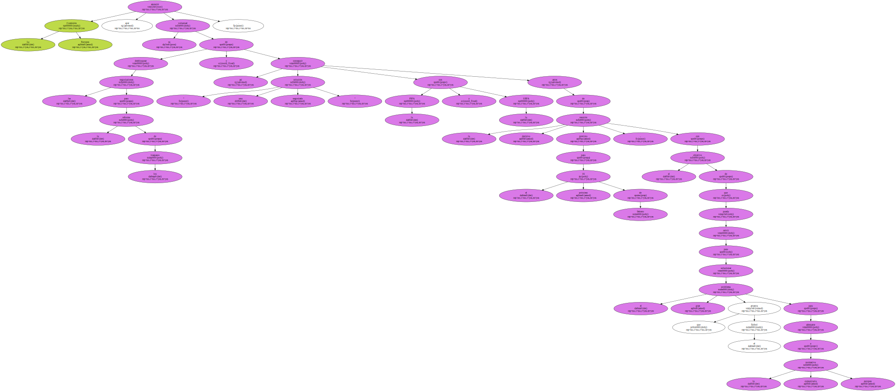
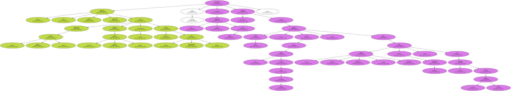
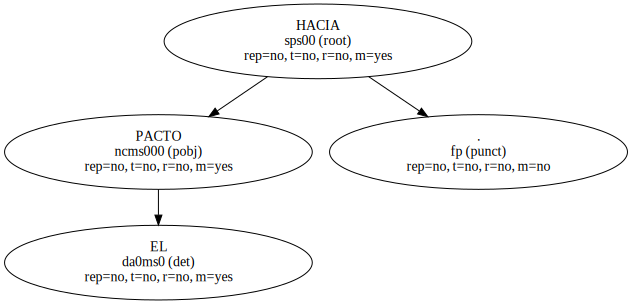
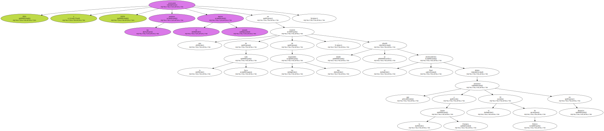
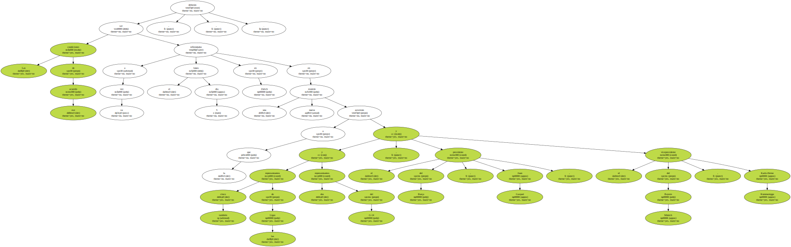
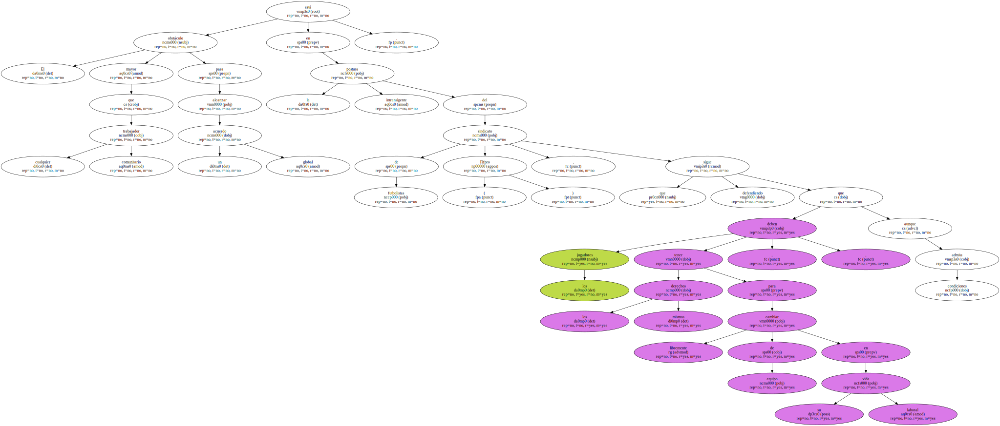
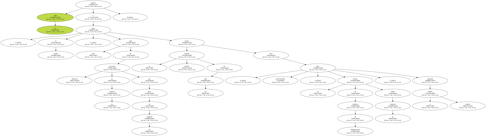

La Comisión Europea anunció ayer su voluntad de desbloquear las negociaciones para la reforma de los traspasos y conseguir así " una solución negociada " con la FIFA y la UEFA antes de la reunión decisiva prevista para el próximo 16 de febrero , con el objetivo de que pueda servir para solucionar el gran problema que arrastra el fútbol para adecuarse a la normativa comunitaria europea.
Los tres comisarios europeos responsables de Competencia ( Mario Monti ) , Deportes ( Viviane Reding ) y Asuntos Sociales ( Anna Diamantopoulou ) comunicaron por escrito a los dos organismos del fútbol su voluntad de celebrar una reunión , antes de la cumbre del 16 de febrero , para dar " un impulso político " decisivo a las discusiones , por la inquietud ante el bloqueo actual.
Bruselas advierte de que no desea imponer al mundo del fútbol su propio sistema de traspasos , sino una solución que sea " compatible a la vez con la legislación europea y con el derecho nacional , y respete la libertad contractual " , según anunció Amelia Torres , portavoz del comisario Mario Monti.

HACIA EL PACTO.
FIFA y UEFA acercaron sus posturas el pasado martes en una reunión de la task force de los dos organismos , donde se abordó el planteamiento final que deben presentar a la Unión Europea el 16 de febrero en Bruselas.
Las condiciones de ese acuerdo deberán ser refrendadas a su vez el lunes día 5 , en Zúrich , en una nueva reunión a la que asistirán también cinco representantes de las Ligas y dos representantes del G-14 , el presidente del Barça , Joan Gaspart , y el vicepresidente del Bayern Múnich , Karlz-Heinz Rummenigge.
El mayor obstáculo para alcanzar un acuerdo global está en la postura intransigente del sindicato de futbolistas ( Fifpro ) , que sigue defendiendo que los jugadores deben tener los mismos derechos que cualquier trabajador comunitario , para cambiar libremente de equipo en su vida laboral , aunque admita condiciones.
Los clubs quieren evitar , en cambio , todo tipo de rescisión unilateral de los contratos por parte de los jugadores e incluir un contrato mínimo de tres años para fijar , posteriormente , un baremo de cláusulas de indemnización según los contratos , siguiendo el modelo español.
